Lab 1：Reverse¶
可能某些标题含人量不是很足因为我写到这个lab的时候已经没精力排版了 由AI进行markdown的排版 但是未标注AI的地方都是我自己写的
Task 1.1¶
计算机好神奇…… Task 1.1 就是把源代码逐步"翻译"成 CPU 能直接执行的机器指令的过程。
| 步骤 | 命令 | 产物 | 在干什么 |
|---|---|---|---|
| 预处理 | g++ -E -std=c++20 xx.cpp -o xx.i |
xx.i |
宏替换、头文件粘贴、删注释 |
| 编译 | g++ -S -std=c++20 xx.cpp -o xx.s |
xx.s |
C++ → 汇编语言 |
| 汇编 | g++ -c -std=c++20 xx.cpp -o xx.o |
xx.o |
汇编 → 二进制机器码 |
| 链接 | g++ -std=c++20 xx.cpp -o xx |
xx |
拼接库、填地址 → 可执行文件 |
| 运行 | ./xx |
— | 执行程序 |
个人理解
- 预处理：做"准备工作"，例如
#include <iostream>会在这一步进行处理，即跑到系统目录里找iostream文件粘贴到文件里，宏展开，注释删掉，拼成一个极大的 C 代码（比如说我的.i文件有 36984 行）。 - 编译（核心）：将 C++ 代码编译成汇编语言。
- 汇编：将汇编里的
mov、add、call等指令编译成 CPU 认识的 0 和 1，产出.o目标文件。 - 链接：但
.o文件依旧不能执行——因为代码里调用了printf、cout等标准库函数，这些函数的代码不在文件里。编译器只知道"这里需要一个外部函数"，但不知道这个函数的真实内存地址。所以.o文件里这些地方是留空的，等于一张"地址待填写"的表格。链接器把.o文件和系统提供的标准库拼在一起，确定每个函数、每个全局变量在最终可执行文件里的绝对地址，把之前留空的地方都填补成真实的函数地址。然后就可以./执行了。
关于待填充的内容
这里待填充的是非模板的声明，比如说初始化函数之类的较为底层的代码。像 std::cout、upper_bound 这种都是直接在预处理的时候粘贴进来的。
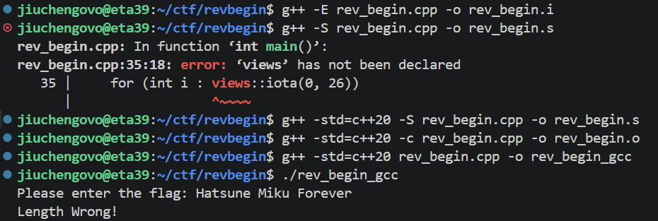
| 步骤 | 命令 | 产物 | 在干什么 |
|---|---|---|---|
| LLVM IR 文本 | clang++ -std=c++20 -S -emit-llvm xx.cpp -o xx.ll |
xx.ll |
生成文本格式的中间表示 |
| LLVM Bitcode | clang++ -std=c++20 -c -emit-llvm xx.cpp -o xx.bc |
xx.bc |
生成二进制格式的中间表示 |
| 链接+运行 | clang++ -std=c++20 xx.cpp -o xx && ./xx |
xx |
生成可执行文件并运行 |
Clang++ 会在中间经历 LLVM IR 的步骤。LLVM IR 是一种"中间语言"，优势在于跨平台。
gcc: C++ → 汇编 → 机器码 → 可执行文件
clang: C++ → LLVM IR → 汇编 → 机器码 → 可执行文件
↑
多出来这一层：跨平台优化和分析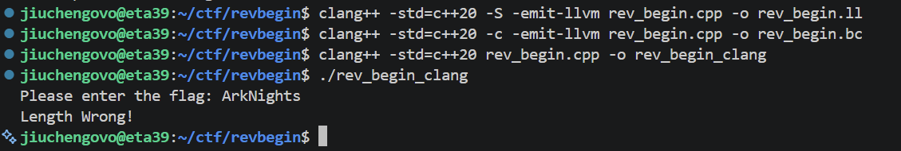
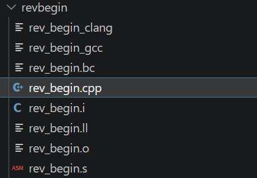
Task 1.2 — 汇编与调试分析¶
逆推 flag 很简单，就按照 C++ 代码一步步逆回去就可以了。
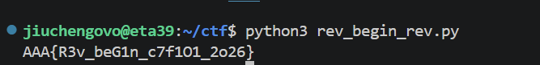
没学过汇编我是真的看不懂一点……大部分借助了 AI 来分析。
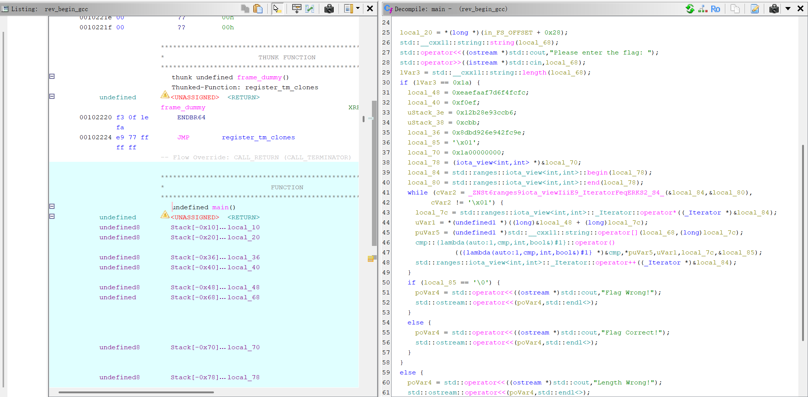
gcc main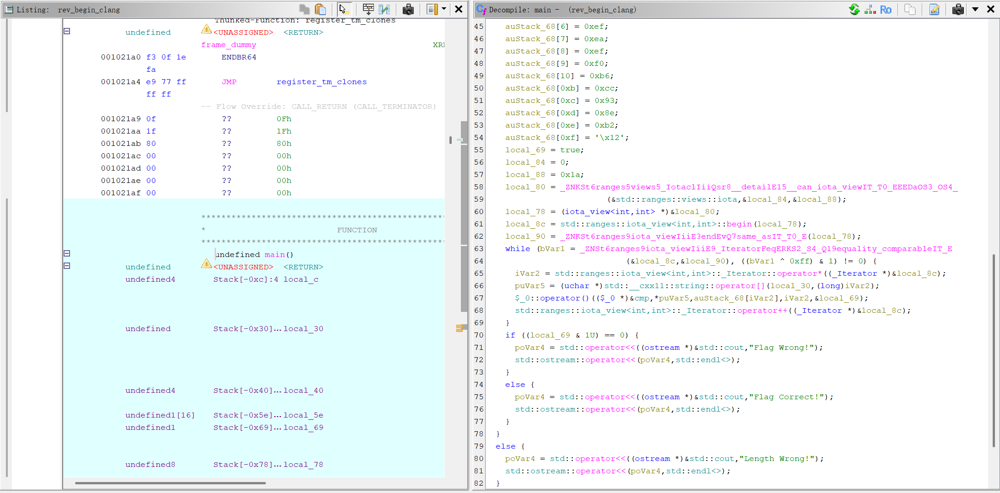
clang mainGCC 的 Lambda 实现¶
Lambda 被编译为独立的匿名类，并保留了源码中的变量名作为符号名。在 Ghidra 的 Symbol Tree 中搜索 cmp 就可以找到 cmp::operator() 函数，图片上就是这个函数。
LEA RDI, [cmp] ; 加载 lambda 对象地址
MOV R8, RCX ; ok 引用（第4个参数）
MOV ECX, EDX ; i（第3个参数）
MOV EDX, EBX ; target[i]（第2个参数）
MOV ESI, EAX ; input[i]（第1个参数）
CALL cmp::{lambda}#1::operator()<unsigned char>可以看出参数通过寄存器传递（esi、edx、ecx、r8）。
Clang 的 Lambda 实现¶
Lambda 也会被编译为独立匿名类，但符号名为编译器自动生成的 $_0（无意义的序号标识）。Ghidra 中搜索 $_0 才可以找到。
LEA RDI, [$_0] ; 加载匿名 lambda 对象地址
LEA R8, [RBP-0x61] ; ok 引用（第4个参数）
CALL $_0::operator()<unsigned char>部分参数通过栈传递（ok 引用），这与上面的 GCC 的策略是不同的。
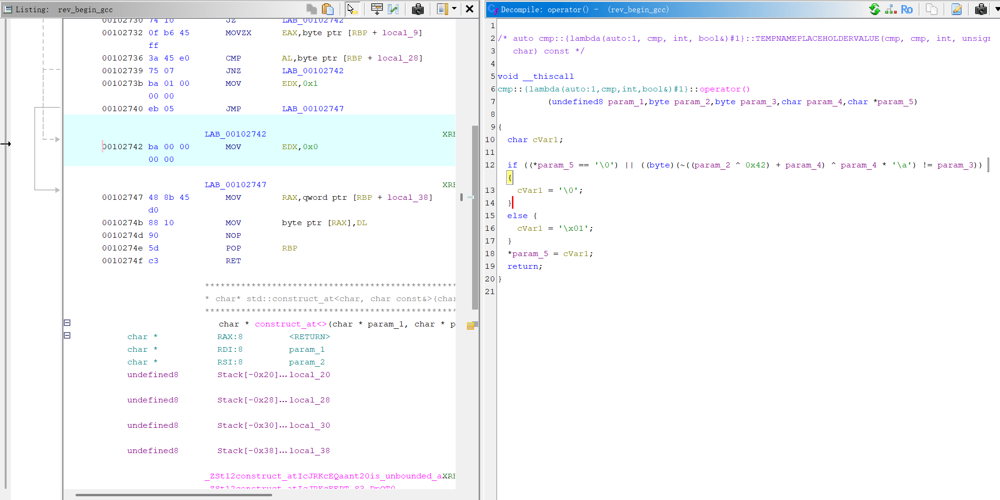
gcc lambda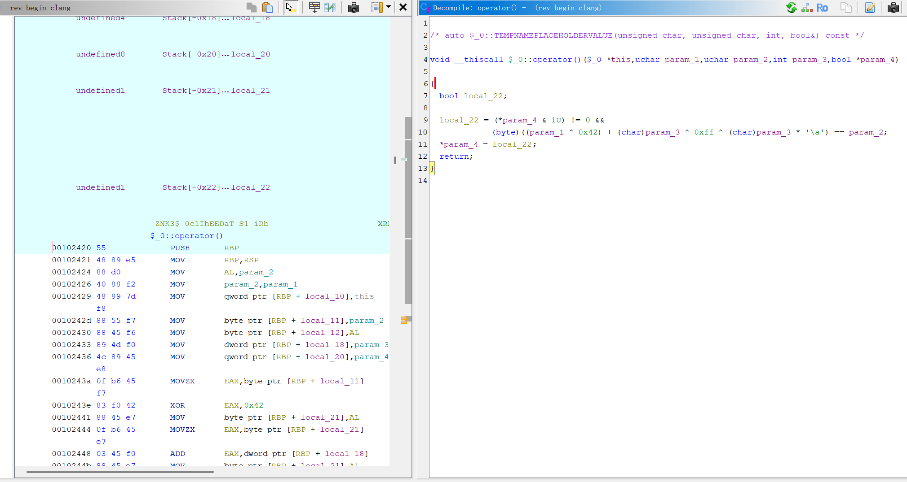
clang lambdaGCC 汇编实现（地址 0x10233f）¶
LEA RAX, [RBP-0x7c]
MOV RDI, RAX
CALL std::ranges::iota_view<int,int>::_Iterator::operator* ; 取迭代器当前值
MOV dword ptr [RBP+local_7c], EAX
MOV EAX, dword ptr [RBP+local_7c]
CDQE
MOVZX EAX, byte ptr [RBP+RAX*0x1-0x40] ; 取 target[i]
MOVZX EBX, AL
MOV EAX, dword ptr [RBP+local_7c]
MOVSXD RDX, EAX
LEA RAX, [RBP-0x60]
MOV RSI, RDX
MOV RDI, RAX
CALL std::__cxx11::string::operator[] ; 取 input[i]
MOVZX EAX, byte ptr [RAX]
MOVZX EAX, AL
LEA RCX, [RBP-0x7d] ; ok 变量地址
MOV EDX, dword ptr [RBP+local_7c] ; i
LEA RDI, [cmp] ; lambda 地址
MOV R8, RCX ; ok 引用
MOV ECX, EDX ; i
MOV EDX, EBX ; target[i]
MOV ESI, EAX ; input[i]
CALL cmp::operator() ; 调 lambda
LEA RAX, [RBP-0x7c]
MOV RDI, RAX
CALL std::ranges::iota_view<int,int>::_Iterator::operator++ ; i++Clang 汇编实现（地址 0x10231a）¶
LEA RDI, [RBP-0x84]
LEA RSI, [RBP-0x88]
CALL iota_view::_Iterator::operator== ; 先比较迭代器（含 equality_comparable 约束）
; ... 比较逻辑 ...
LEA RDI, [RBP-0x84]
CALL iota_view::_Iterator::operator* ; 取迭代器当前值
MOV dword ptr [RBP+local_94], EAX
MOVSXD RSI, dword ptr [RBP+local_94]
LEA RDI, [RBP-0x28]
CALL string::operator[] ; 取 input[i]
MOV qword ptr [RBP+local_c0], RAX
; ...
MOV RAX, qword ptr [RBP+local_c0]
MOVZX ESI, byte ptr [RAX]
MOVSXD RAX, dword ptr [RBP+local_94]
MOV ECX, EAX
MOVZX EDX, byte ptr [RBP+RAX*0x1-0x60] ; 取 target[i]
LEA RDI, [$_0] ; 匿名 lambda 地址
LEA R8, [RBP-0x61] ; ok 引用
CALL $_0::operator() ; 调 lambda
; ...
LEA RDI, [RBP-0x84]
CALL iota_view::_Iterator::operator++ ; i++对比总结¶
| 对比维度 | GCC | Clang |
|---|---|---|
| 迭代器构造 | 直接调用 begin() / end() |
先通过工厂函数 _Iota 检查 __can_iota_view 类型约束 |
end() 符号名 |
_IteratorFeqERKS2_S4_ |
_IteratorFeqERKS2_S4_Q19equality_comparableIT_E（携带 concept 信息） |
operator== 符号名 |
简洁 | 带 Q7same_asIT_T0_E 类型约束标记 |
| 优化程度 | 较少冗余指令 | 含大量 eb 00（jmp $+2）对齐填充，未开优化编译 |
我的理解
GCC 在编译期将解释并丢弃掉约束信息，生成的符号名会更简洁。Clang 将这些约束信息保留在符号名中，即使编译完成后也可以通过符号名反推源码。此外 Clang 也多了一层 _Iota 函数作为 iota_view 的检查。
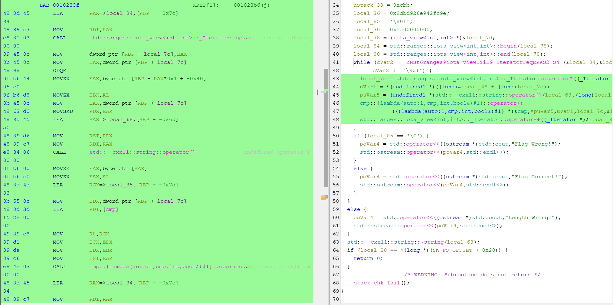
gcc iota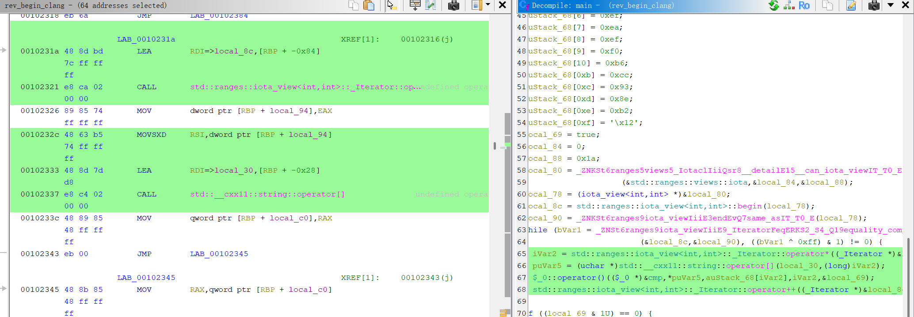
clang iota 1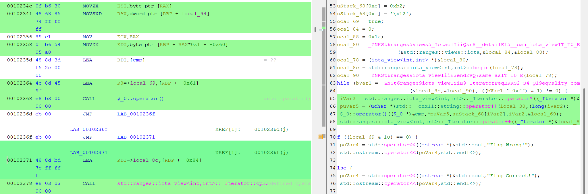
clang iota 2基础操作¶
加载程序、查看源码、设置断点：
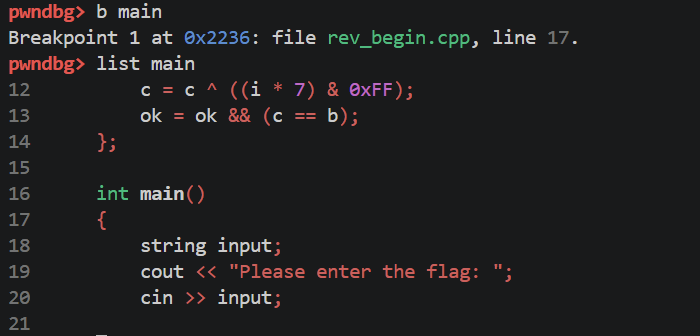
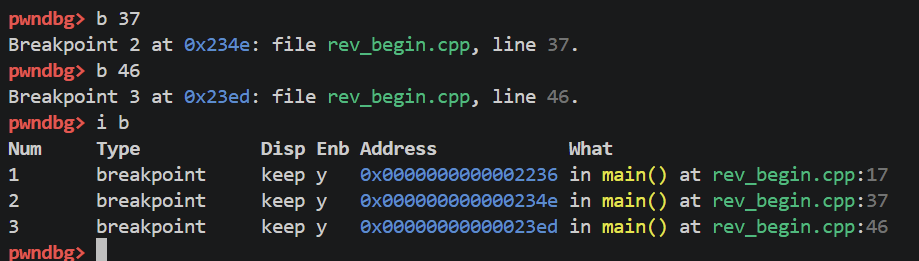
运行、单步执行：
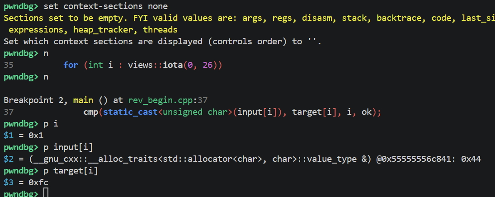
Lambda 函数动态分析¶
步入 lambda，查看参数：
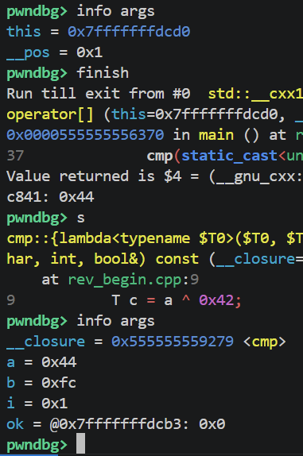
跟踪 c 值的变化：
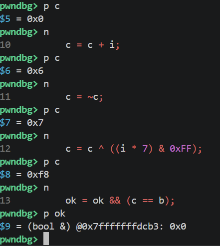
常用命令速查¶
| 命令 | 作用 |
|---|---|
b N |
在第 N 行设断点 |
r |
运行程序 |
n |
单步步过 |
s |
单步步入 |
finish |
跳出当前函数 |
p var |
打印变量值 |
info args |
查看当前函数参数 |
info locals |
查看局部变量 |
i b |
查看断点列表 |
disable N |
禁用编号为 N 的断点 |
c |
继续执行 |
q |
退出 GDB |
Task 2 — rev_more（Go 程序逆向）¶
该文件未剥离符号（not stripped），Ghidra 能够直接显示出所有 Go 函数的原始名称。
程序读取了 flag.txt 这个文件：
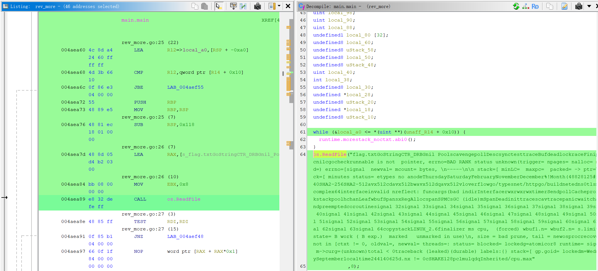
长度校验——长度必须能被 8 整除：
extraout_RBX == 0→ 文件为空 → panicextraout_RBX & 7→ 按位与 7，等价于% 8。不为 0 就是不能被 8 整除 → panic
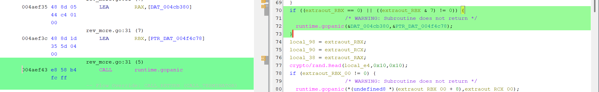
密钥长度——十六字节：
crypto/rand.Read(local_e4, 0x10, 0x10)- 第二个参数就是要读取的字节数
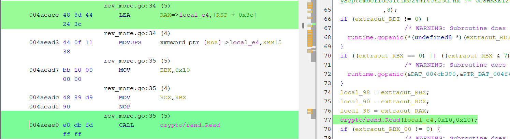
下面是关键的加密环节（结合 AI 辅助分析）：
for (iVar6 = 0; iVar6 < 0x6f; iVar6 = iVar6 + 1) {
// ^^^^^^
// 0x6F = 111 → 加密轮数
// ============ 第一半：更新 v0 ============
local_a8 = local_a8 + (
// ^^^^^^^^ v0
(local_c8[dVar11 & 3] + dVar11)
// ^^^^^^^^^^^^^^^^^^^^^^^^^^^
// key[sum & 3] + sum
^
((local_a4 >> 5 ^ local_a4 << 4) + local_a4)
// ^^^^^^^^^^^^^^^^^^^^^^^^^^^^^^^^^^^^^^
// ((v1 >> 5) ^ (v1 << 4)) + v1 ← XTEA 标志性操作！
);
// ============ Delta 累加 ============
local_cc = dVar11 + 0x4a537f29;
// ^^^^^^ ^^^^^^^^^^
// sum DELTA（自定义，不是标准 0x9E3779B9）
// ============ 第二半：更新 v1 ============
local_a4 = local_a4 + (
// ^^^^^^^^ v1
(dVar11 + local_c8[local_cc >> 0xb & 3] + 0x4a537f29)
// ^^^^^^^^^^^^^^^^^
// key[(sum+delta) >> 11 & 3]
^
(local_a8 + (local_a8 >> 5 ^ local_a8 * 0x10))
// ^^^^^^^^^^^^^^^^^^^^^^^^^^^^^^^
// ((v0 >> 5) ^ (v0 << 4)) + v0
// 注意：* 0x10 = << 4，Ghidra 有时显示为乘法
);
// ============ sum 传递到下一轮 ============
dVar11 = local_cc;
// sum = sum + delta
}
// ═══════════════ 111 轮结束 ═══════════════
// ============ BSWAP 回 LE 并输出 ============
uVar1 = uVar9 + 8;
local_ec = CONCAT44(
// v1 的 BSWAP —— 把加密后的 v1 转回小端序存储
local_a4 >> 0x18 | (local_a4 & 0xff0000) >> 8 |
(local_a4 & 0xff00) << 8 | local_a4 << 0x18,
// ^^^^^^^^^^^^^^^^^^^^^^^^^^^^^^^^
// 这就是 bswap(local_a4)
// v0 的 BSWAP —— 把加密后的 v0 转回小端序存储
local_a8 >> 0x18 | (local_a8 & 0xff0000) >> 8 |
(local_a8 & 0xff00) << 8 | local_a8 << 0x18
// ^^^^^^^^^^^^^^^^^^^^^^^^^^^^^^^^
// 这就是 bswap(local_a8)
);
// CONCAT44 把两个 32 位值拼成一个 64 位值
// 高32位=v1, 低32位=v0 → 写入输出缓冲区 8 字节
uVar10 = uVar9; // 旧指针保存
uVar5 = uVar2; // 跳到下一个 8 字节分组Flag 每 8 字节拆成左右两个数 v0 和 v1，程序用长度为 16 字节的密钥做 111 轮加密：
- 先把
v1右移 5 位异或左移 4 位再加v1自身 - 用
key[sum & 3] + sum异或上去，加到v0上 - 然后把
sum加上0x4A537F29 - 再用
v0右移 5 位异或左移 4 位加v0自身，去异或sum + key[(sum>>11) & 3]，加到v1上
111 轮后输出的 v0、v1 就是密文。
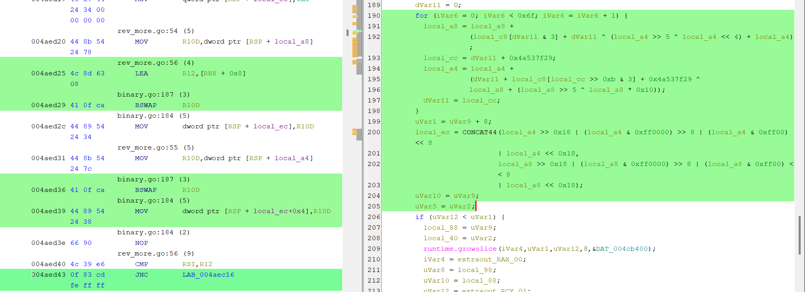
解密的时候把这个过程逆回去就可以（脚本使用了 AI 协助进行编写 qwq）。
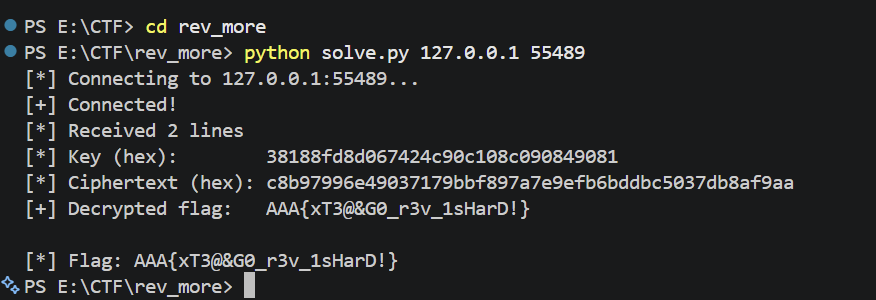
Task 3 — rev_again¶
将文件放 Ghidra 里，看 Program Trees，发现 UPX0、UPX1。
知识点：加壳
加壳是将可执行文件压缩或加密，运行时再自动解压还原。对逆向分析的影响是：直接用 Ghidra/IDA 打开加壳文件，只能看到壳的代码，看不到真正程序逻辑。
判断方法：用 Ghidra 打开文件后，如果段名是 UPX0、UPX1（或 UPX0、UPX1、UPX2），说明被 UPX 加壳了。
脱壳方法：用 UPX 工具直接解压：
upx -d input.exe -o output.exe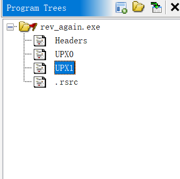
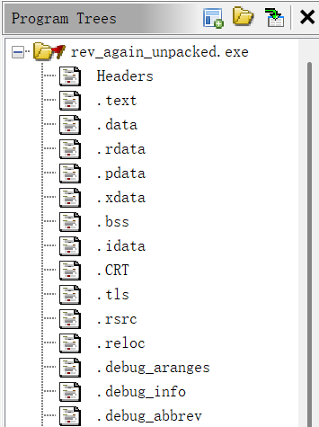
脱壳后可以看到文件的大体内容。一个 Windows .exe 文件主要包含以下几个关键部分：
| 结构 | 说明 |
|---|---|
.text |
代码段，存放所有函数的机器码 |
.rdata |
只读数据段，存放字符串、常量、加密数据等 |
.data |
可读写数据段，存放全局变量 |
| 导入表 (IAT) | 列出程序调用的外部 DLL 函数（如 MessageBoxW） |
| 导出表 | 程序提供给外部的函数（.exe 通常没有） |
- 输入端：明文 + 密钥（RVA
0x6020，即kEy3rd） - 输出端：密文
- 运算：RC4 流加密（XOR）
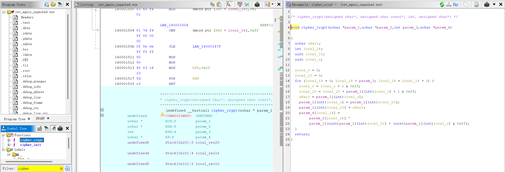

-
密钥：用 String 搜索
kEy3rd确定位置，然后 Search String 定位。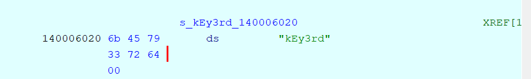
-
密文：Ghidra Listing 窗口
0x1400060e0处显示的数据（注意顶部 XREF 表明WindowProc函数两处引用了该地址），该地址到0x140006110之间即为加密后的 flag 密文。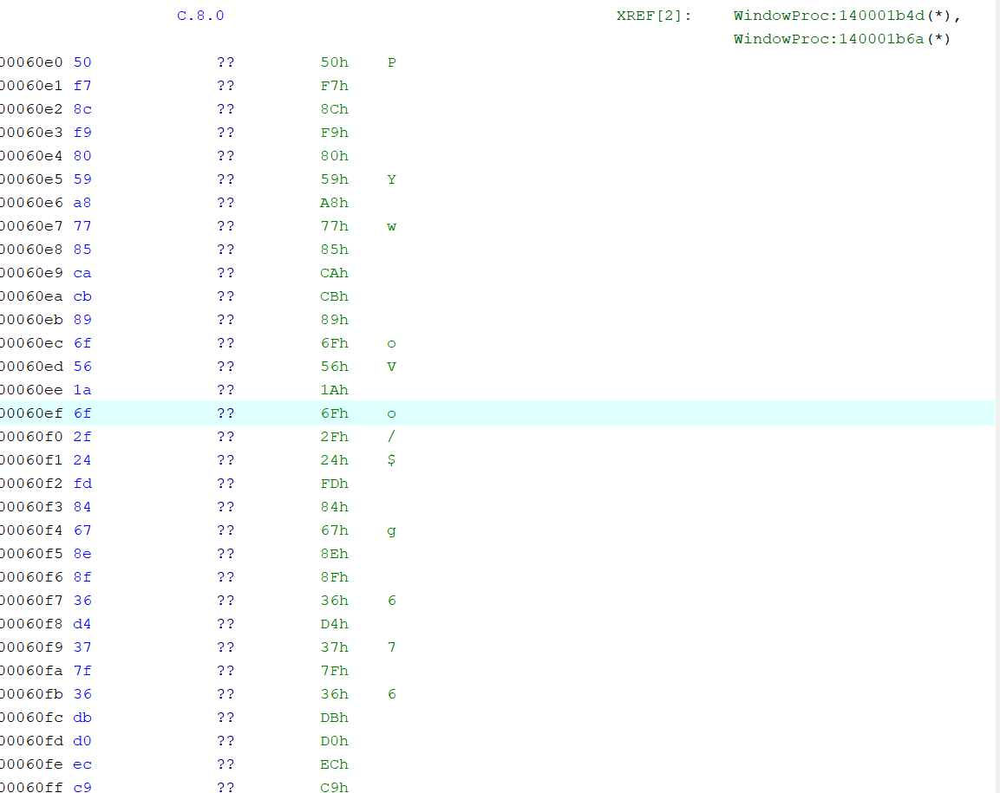
执行脚本后得到 flag。
偷偷补一个
}应该没关系吧……我也不知道为什么不对。这道题基本从头到尾都是 AI 协助完成的，我改写不出来 orz。
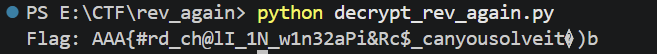